MasterClass DecryptaGeo 2017 - Lizmap : publier vos cartes QGIS sur Internet
Date: 2017-01-25
Auteur: Michaël Douchin
Contact:
info@3liz.com
Organisation: 3Liz
Site internet:
http://3liz.com

Lizmap ?
-
Un Web SIG libre pour des projets QGIS
-
Créé par 3liz en 2011
-
Un plugin QGIS et un client Web
-
QGIS Serveur comme serveur cartographique
-
Nouvelle version majeure 3.0 fin mai 2016
-
Version 3.1 pour fin janvier 2017

QGIS Server ?
Un serveur cartographique basé sur QGIS
-
rendu de cartes au format image - WMS
-
export de données vectorielles en GML et GeoJSON - WFS
-
export de raster - WCS
-
serveur de traitements - WPS ( plugin )

Pourquoi QGIS Server ?
-
Pas de configuration -> le projet QGIS :
-
symbologie, étiquettes, échelles, couches
-
Support des formats de QGIS:
-
vecteur, raster, couches virtuelles
-
Les fonctionnalités de QGIS:
-
rendu 2.5D, cartes de chaleur, composeurs d’impression, règles d’étiquetage, expressions, formulaires

-
On envoie sur le serveur le projet QGIS et les données liées (ou PostgreSQL )
-
On utilise un client WMS comme QGIS pour visualiser les données

Qu’apporte Lizmap ?
-
Il liste tous les projets publiés sur le serveur
-
Il affiche les cartes web pour chaque projet
-
Il fait l’intermédiaire entre la carte web et QGIS Server
-
Il contrôle les accès aux cartes (gestion des droits)
-
On configure le projet
QGIS
: propriétés du projet, projection, couches
-
On configure la carte via le
plugin Lizmap
: échelles, fonds, outils
-
On envoie le projet & la configuration sur le serveur
-
On visualise sur l’interface de
Lizmap Web Client
|
bureau
|
serveur
|
browser
|
|
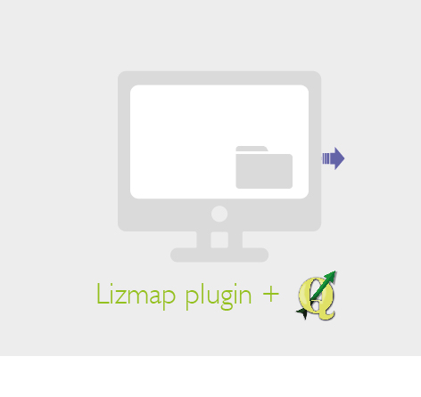
|

|
|
La page d’accueil des projets
-
Les projets sont rangés par répertoire
-
Une vignette par projet QGIS: illustration, titre, résumé
-
Les projets accessibles en fonction des droits
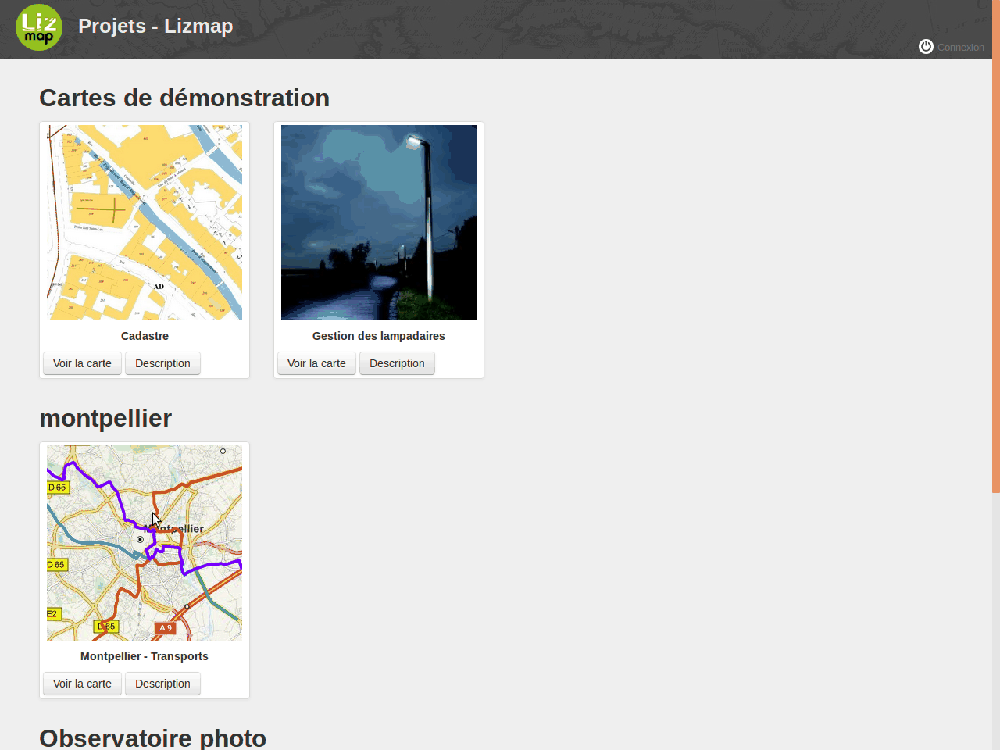
La carte Lizmap
-
Un bandeau : logo, recherche d’adresse, connexion
-
Une barre de navigation
-
Un panneau de gauche : couches et légende, métadonnées de la carte
-
Une fenêtre à droite pour les outils : impression, localisation
-
Une carte miniature avec l’échelle
-
Une interface HTML “responsive”, adaptée aux différents écrans
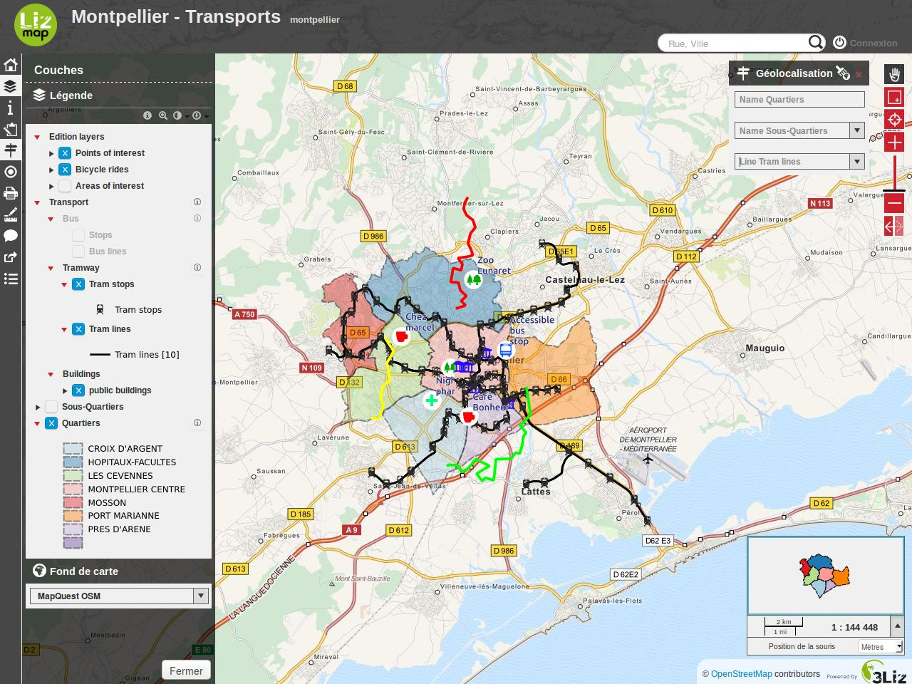
L’environnement de travail pour la Master Class
Côté Serveur
Pour la Master Class, nous avons installé sur chaque machine un serveur cartographique, basé sur Lizmap. Il contient pour la partie serveur
-
Serveur Web
: Nginx & php-fpm
-
Application cartographique Web
: Lizmap Web Client 3.1beta
-
Serveur cartographique
: QGIS Server 2.14 LTR,
-
Serveur de Gestion de Bases de données
: PostgreSQL 9.6/ PostGIS 2.3
-
Serveur FTP
: Pure-ftpd
-
Serveur de cache
: Redis

Côté bureautique
Cette machine est basée sur le système d’exploitation Debian Jessie, et le bureau Xfce. C’est aussi un poste bureautique, qui contient:
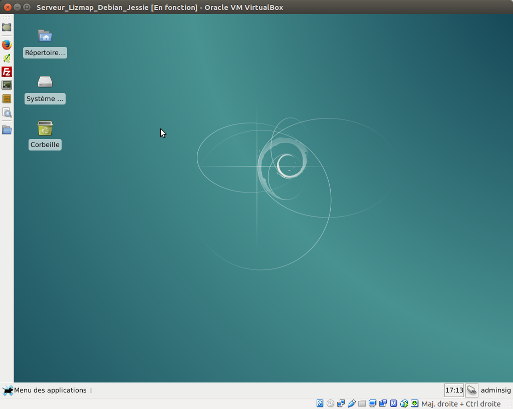
Les données utilisées pour la Master Class
Les données proviennent des portails opendata. Ce sont principalement des fichiers Shapefile. Il sont en projection Lambert 93 (EPSG:2154)
-
Des données
Route 500
de l’IGN
-
Des données
GéoFLA
de l’IGN
-
Nous créerons ensuite des données dans
PostgreSQL
Les données sont placées dans le répertoire
/home/adminsig/Lizmap/rep1/layers_idf/
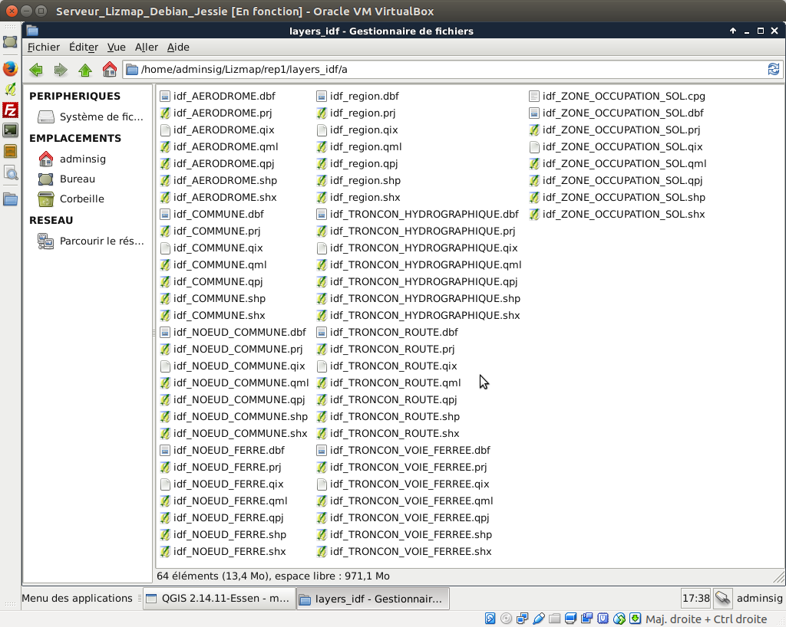
Le projet QGIS de la Master Class
Nous avons préparé un projet QGIS avec ces données, organisées et mises en forme, afin de faciliter la prise en main.
Lancez QGIS via l’icône de la barre de gauche, puis ouvrir le projet
master_class_lizmap.qgs
situé dans le répertoire
/home/adminsig/Lizmap/rep1/
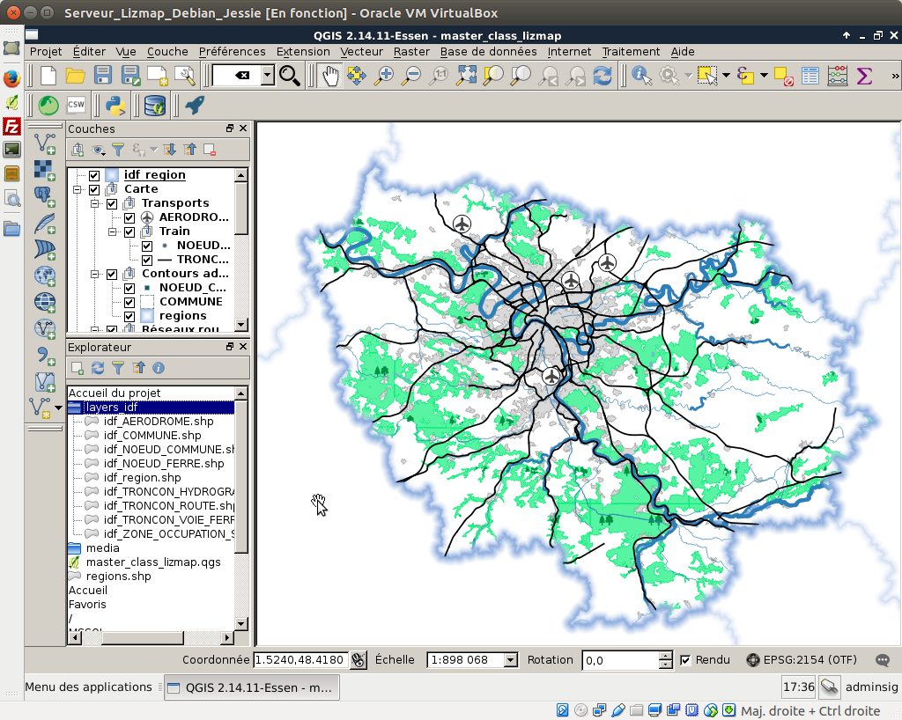
Installation du plugin Lizmap sous QGIS
Visualiser la carte Lizmap correspondante au projet QGIS
Lancer le navigateur
Firefox
via la barre de lancement de gauche. Deux onglets sont automatiquement ouverts :
-
Un onglet
Projets - Lizmap
avec la page d’accueil de l’application Lizmap (serveur local)
-
Un onglet
Lizmap - Documentation
avec la documentation de Lizmap
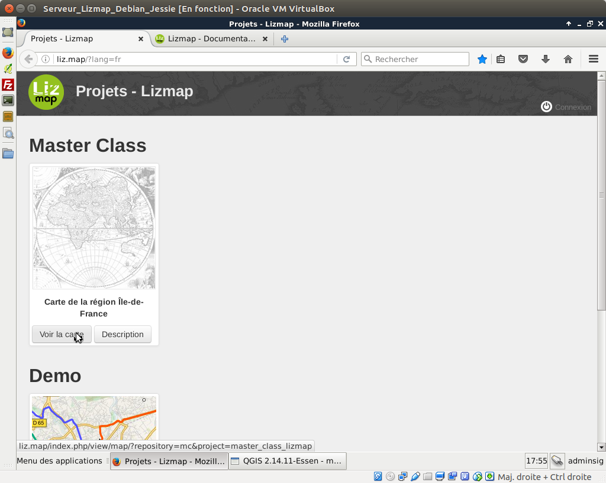
Dans l’onglet Lizmap, vous pouvez cliquer sur le bouton
Voir la carte
pour le répertoire
Master Class
et le projet
Carte de la région Île-de-France
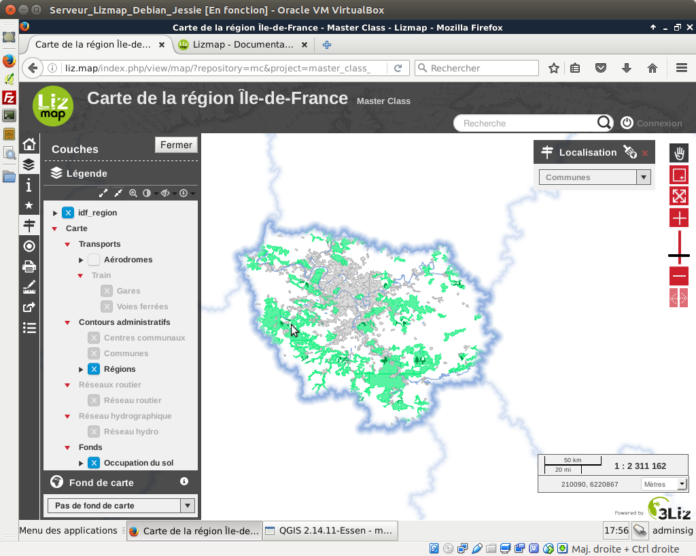
Modifier le projet QGIS
Nous allons modifier quelques propriétés du projet, puis re-publier le projet sur le serveur, pour montrer le fonctionnement de Lizmap.
Ouvrir les propriétés du projet
: menu
Projet > Propriétés du projet
, onglet
Serveur OWS
.
Case à cocher
Informations générales du service
et modifier le titre, la description, et d’autres informations utiles (métadonnées du projet QGIS)
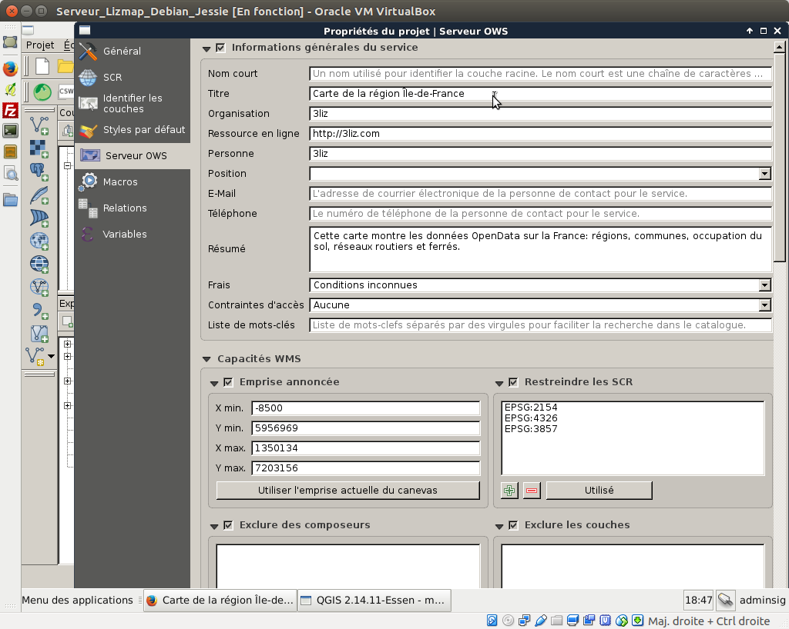
Dans Lizmap, nous utilisons par défaut le titre des couches pour l’affichage (et pas le nom écrit dans la légende QGIS). Pour modifier ces informations:
-
Ouvrir les
Propriétés
d’une couche vecteur, en double-cliquant sur son nom dans la légende.
-
Onglet
Métadonnées
: vous pouvez par exemple modifier le titre, le résumé de la couche
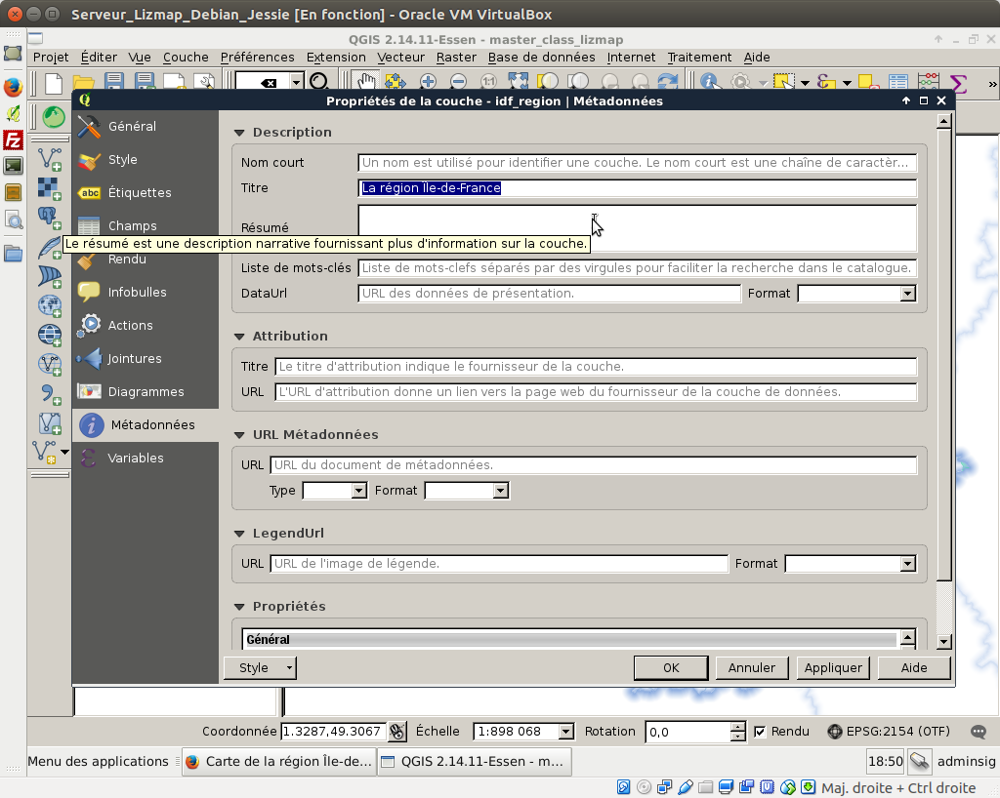
Modifier la symbologie d’une couche
Pour tester, nous pouvons changer la couleur des symboles pour la couche
AERODROME
-
Ouvrir les
Propriétés
d’une couche vecteur, en double-cliquant sur son nom dans la légende.
-
Dans l’
onglet Style
, choisir une couleur différente pour l’avion, puis valider et fermer.

Une fois ces informations modifiées, il faut maintenant:
-
enregistrer le projet QGIS
-
enregistrer la configuration Lizmap
via le plugin, puis
-
publier le projet et la configuration
sur le serveur
Préparer la publication avec le plugin Lizmap
Ouvrir le plugin Lizmap
: une boite de dialogue apparaît avec 6 onglets.
-
Couches
: la configuration détaillée couche par couche (titre, description, lien, cache, format d’image, etc.)
-
Carte
: choix des outils simples (impression, recherche d’adresse, etc.), des échelles, de l’emprise initiale de la carte,
-
Fonds
: choix des fonds externes (OpenStreetMap, Géoportail IGN, etc.) et des fonds Lizmap
-
Outils
: activation ou désactivation des outils avancés (localiser par couche, édition, filtrage, table attributaire)
-
FTP
: outil de synchronisation basé sur le FTP.
désactivé
-
Log
: Fenêtre contenant les messages liés à la configuration

Pour enregistrer la configuration Lizmap, il suffit d’appuyer sur le bouton
Enregistrer
-
Cela enregistre un fichier
.qgs.cfg
au même niveau que le projet QGIS
Une fois ce fichier enregistré, nous devons envoyer sur le serveur
le projet QGIS modifié
, ainsi que
la configuration Lizmap
mise à jour.
Pour cela, nous utilisons aujourd’hui le protocole FTP.
Envoyer son projet et les données via FTP
Normalement, les fichiers doivent être
poussés sur le serveur distant
. Nous pouvons utiliser le
FTP
(sécurisé via SSL).
NB: Dans notre cas, le serveur est notre machine. Nous allons quand même montrer comment transférer les données via FTP.
-
On utilise un
client FTP
, par exemple
FileZilla
: le lancer via la barre de gauche
-
Ouvrir le
gestionnaire de connexion
via le 1er bouton de la barre d’outils
-
Une connexion
Liz.map
doit normalement être configurée. Le mot de passe est
12345678
pour l’utilisateur
lizmap
-
Se connecter via le
bouton Connexion
-
Le panneau de gauche liste
les fichiers locaux
du répertoire
/home/adminsig/Lizmap/
: aller sur le répertoire
rep1
dans lequel se trouve votre projet QGIS
-
Le panneau de droite liste
les répertoires du serveur distant
:
commun
,
rep1

La navigation est synchronisée entre le panneau de gauche et de droite. Le projet, la configuration ainsi que les fichiers sont présents en local, et sur le serveur.
-
Envoyer les fichiers du
projet QGIS
(.qgs) et le fichier de
configuration Lizmap
(.qgs.cfg) du répertoire local
rep1/
vers le répertoire distant
rep1

-
Vérifier les modifications sur la carte en Ligne
: rafraîchir la page web de la carte Lizmap dans le navigateur.
–> Vous devez voir les modifications effectuées sur votre projet QGIS
: titre du projet, métadonnées des couches, styles des aéroports.
L’onglet Couches du plugin Lizmap
Nous allons voir quelques options de cet onglet
-
les
métadonnées
: titre, résumé, et lien
-
la
popup
: fenêtre d’information sur les objets
-
groupe comme une couche
-
Le plugin reprend les métadonnées renseignées via les propriétés de la couche.
-
On peut éditer le titre et le résumé depuis cette interface.
-
On peut ajouter un lien, de type
URL
(ex:
http://3liz.com
) ou
un document
posé dans le répertoire
media/
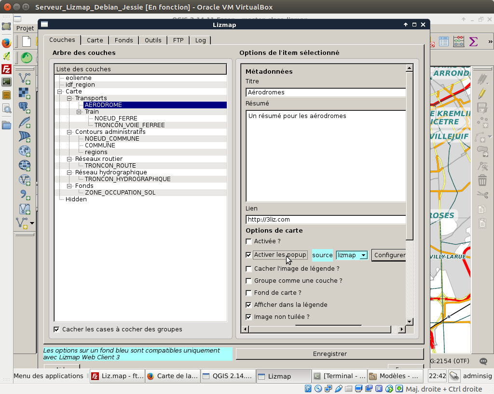
-
Enregistrer le projet QGIS, la configuration Lizmap, et re-publier via FTP pour tester
Une popup est une
fenêtre d’information
qui est affichée à l’utilisateur lorsqu’il clique sur la carte. Elle contient les données attributaires des couches vectorielles pour lesquelles les popups sont activées.

Il est possible:
-
de limiter les colonnes affichées
dans la popup via la
colonne WMS du tableau de l’onglet Champs
des propriétés de chaque couche vectorielle
-
d’utiliser des alias
à la place du nom des champs pour l’affichage :
colonne Alias du tableau des champs
-
d’afficher des images et des liens
dans les popups: nous le verrons plus tard.
L’onglet Carte du plugin Lizmap
Dans le plugin Lizmap,
onglet Carte
, il est possible d’ajouter les outils suivants via le groupe
Outils de la carte
-
Impression
: il faut avoir au moins un composeur QGIS -> nous le verrons ensuite
-
Outils de mesure
: ajoute un menu pour mesure une longueur, une aire ou un périmètre
-
Zoom précédent/suivant
: ajoute 2 boutons pour naviguer entre les emprises déjà visitées
-
Positionnement automatique
: demande au navigateur la position via api ou GPS et recentre la carte
-
Recherche d’adresse
: permet de chercher une adresse et de zoomer sur le résultat sélectionné

L’onglet Outils du plugin Lizmap
Cet onglet permet de configurer les outils avancés de Lizmap.
Zoomer facilement sur une zone : Localiser par couche
On souhaite proposer à l’utilisateur des listes déroulantes où il pourra choisir un lieu sur lequel zoomer. La carte présente déjà un exemple sur les communes.
Pour ajouter une couche:
-
Ouvrir le menu
Projet > Propriétés du projet > Onglet Serveur OWS
.
-
Dans le groupe
Capacités WFS
, cocher
Publier
pour la couche
AERODROME
-
Ouvrir le plugin Lizmap,
Onglet Outils
-
Dans le groupe
Localiser par couche
choisir la couche
AERODROME
et l’attribut
TOPONYME
à afficher et cocher
Afficher la géométrie
. Puis bouton
Ajouter la couche
L’affichage de tableaux de données
Nous souhaitons proposer à l’utilisateur un affichage des données sous la forme de tableaux. Pour cela, il suffit
-
de publier la/les couches
en WFS
via les propriétés du projet QGIS (onglet Serveur OWS)
-
d’utiliser l’outil
Table attributaire
de l’onglet
Outils
du plugin Lizmap
-
On choisit la couche, l’
identifiant unique
(privilégier les entiers et clés primaires) et on l’ajoute via le bouton.

On enregistre, et on publie sur le serveur.
L’activation de la table attributaire pour une couche entraîne l’ajout de fonctionnalités:
-
affichage du
tableau des données
-
export
des données vectorielles
-
sélection
des données
-
filtre
des données

L’édition de données dans Lizmap
Préparer l’édition de données
Nous souhaitons permettre aux utilisateurs de
modifier certaines couches
publiées dans la carte. Pour cela, nous devons utiliser des couches stockées dans une base
PostGreSQL/PostGIS

-
On ajoute la couche
eolienne
dans le projet QGIS
-
On ouvre les propriétés de la couche, onglet
Champs
-
On choisit des types de champs via le bouton
Outil d’édition

On peut tester dans QGIS en ouvrant la table attributaire
-
Sélectionner la couche dans la légende
-
Menu Vue > Barres d’outils >
Barre d’outils de la numérisation
-
Cliquer sur le bouton
Crayon
pour basculer en mode édition
-
Dans la barre de numérisation, cliquer sur
Ajouter une entité
( 3 points )
-
Dans le formulaire, renseigner les différents champs
-
Valider, puis
enregistrer
via la disquette dans la barre de numérisation

-
On ouvre les propriétés du projet QGIS (Menu Projet > Propriété du projet), on
publie en WFS
(case à cocher dans Capacités WFS ) -> Valider
-
On lance le plugin Lizmmap, onglet Outils, groupe
Edition de couches
-
On choisir la couche eolienne, on coche toutes les cases (Créer, Modifier les attributs, Modifier la géométrie, Supprimer), on ajoute.
-
On enregistre la configuration Lizmap via
Enregistrer
.

-
On
publie
le projet QGIS et la configuration via FTP, et on teste dans le navigateur.
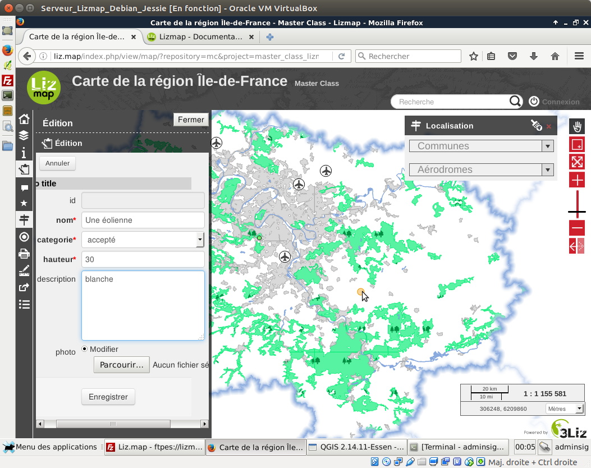
Les relations entre couches
On peut gérer les
relations parent/enfants
entre sources de données dans QGIS, et donc dans Lizmap.
Nous allons l’illustrer avec
des travaux sur les éoliennes
Créer une table travaux

-
Ajouter la couche dans QGIS
On va maintenant déclarer la relation entre les éoliennes et les travaux. Dans les
propriétés du projet
( CTRL + MAJ +P ), onglet
Relations
Ajouter une nouvelle relations, avec les paramètres suivants:
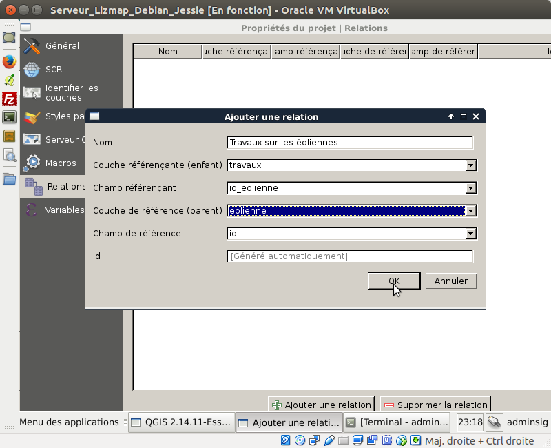
On ouvre les
propriétés de la couche
, et dans l’onglet
Champs
, on choisit l’outil d’édition adapté.
-
Calendrier
pour le champ date.
-
Valeur relationnelle
pour le champ
id_eolienne
-> on va choisir de remplir une liste déroulante avec le nom des éoliennes

On teste l’ajout d’un travail dans QGIS avec le formulaire.

Quand on ouvre la
table attributaire des éoliennes
on peut maintenant consulter les travaux fils.
Publier la table attributaire dans Lizmap
-
Publier les éoliennes et les travaux en
WFS
->
Propriétés du projet
QGIS
-
Dans le
plugin Lizmap
, onglet
Outils
, ajouter les couches
eolienne
et
travaux
dans la table attributaire, en précisant
id
pour l’identifiant unique.
-
Dans le tableau des couches d’
édition
, ajouter aussi la couche
travaux
Enregistrer la configuration Lizmap, et tester:
-
Outil d’édition : on peut ajouter un travail et préciser l’éolienne via la liste déroulante.

-
Dans la table attributaire, si on affiche les éoliennes, on a un tableau des travaux fils en dessous

L’impression dans Lizmap
Pour pouvoir proposer une impression de la carte dans Lizmap, il suffit de créer un ou plusieurs composition QGIS
-
Ouvrir le menu
Projet > Nouveau composeur d’impression
. Donner un nom.
-
Ajouter une carte, un titre et une légende
-
Sauvegarder le projet QGIS
et fermer le composeur
-
Ouvrir le plugin Lizmap,
Onglet Carte
-
Vérifier que la case
Impression simple
est cochée
-
Publier, rafraîchir et tester l’impression
Ajouter une carte miniature
-
On souhaite présenter une
carte miniature
qui montre dans quelle zone l’utilisateur se trouve lorsqu’il navigue sur la carte
-
Ajouter un groupe
Overview
(bien écrire avec une majuscule) à la racine de la légende de QGIS
-
Y ajouter une couche
, par exemple la couche
Quartiers
-
Enregistrer le projet QGIS et publier, puis tester
Masquer des couches sur le projet Web
Certains couches doivent rester présentes dans le projet, mais on ne souhaite pas que l’utilisateur les voit une fois publiées
-
Ajouter un groupe
hidden
-
Y déplacer les couches qu’on souhaite masquer
-
Publier et tester
Regrouper des couches
-
Dans le plugin Lizmap ,
onglet Couches
-
Choisir un groupe, par exemple le groupe
Transport
et le sélectionner.
-
Cocher l’option
Groupe comme une couche
-
Enregistrer la configuration,
publier via le FTP
–> Tester le résultat sur la carte Web.
On peut aussi utiliser l’option
Fond de carte
pour un groupe. Les couches sont alors regroupées, et ce groupe apparaît dans la liste déroulante des fonds.
Autres fonctions avancées
-
La protection des répertoires de cartes
par utilisateur et groupes
-
Les popups au format HTML
: ajouter du contenu riche pour décrire les objets dans Lizmap
-
La création automatique du
cache de tuiles côté serveur
Les ressources
Documentation
:
http://docs.3liz.com/fr/
Code source
Site internet
:
http://3liz.com
Roadmap
-
Lancement de traitements complexes côté serveur et affichage des résultats (WPS et module Traitement)
-
Intégration d’OpenLayers 3
-
Lizmap Mobile en mode déconnecté
-
etc.
Les services de 3liz autour de Lizmap
-
Formation
-
Hébergement complet
: Lizmap Hosting
-
Développement de fonctionnalités
génériques ou métiers
-
Conseils
, optimisation d’une instance
-
Ajout de fonctionnalités pour
QGIS Server
-
Installation
sur serveur Linux